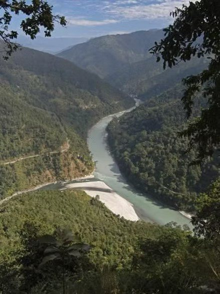
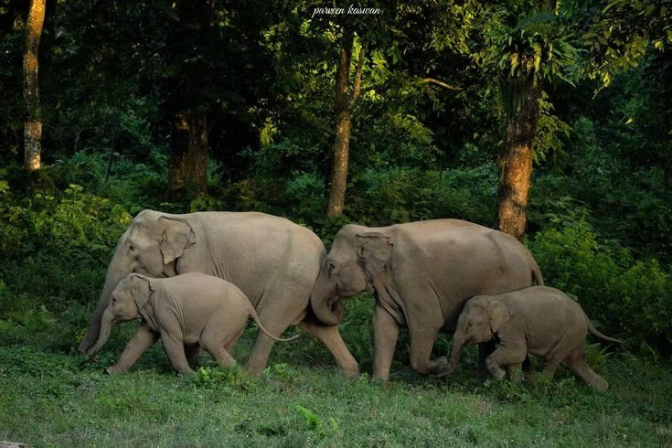
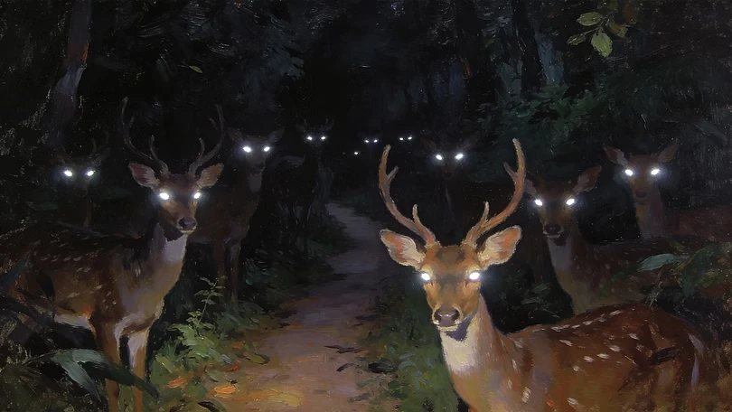

Death of the Child
I am a casualty of military nomadism, changing cities and friends every couple of years within India. This nomadism led me to live in locations that were remote and minimally damaged by human interference. One such city was Siliguri, where I spent two years inside a military base embedded in a serene ecosystem. A twenty-minute walk to the majestic Tista River, surrounded by living creatures and sounds of nature that could defeat Beethoven’s tunes.
The quarters we lived in were old and had cracks on the outer walls. Within these cracks grew dark green moss blankets, and most sane adults would complain about how rusty the structure looked. I was seven years old, and I had opposing views to these grumpy complainants; I loved the moist, refreshing texture of these walls, and they had a sweet scent that I can never forget. On these walls were Giant African Land Snails that I adored so much as to keep a collection of them as pets in my backyard. I am not exaggerating: they were massive.

With the large Tista river came small tributaries that seeped into these dense jungles where I resided. In a small, crystal clear stream that went past my house, I used to sit with my feet in the water and watch small fish curiously pecking at my feet. Being near the foothills of the Himalayan range, one could see large, perfectly rounded rocks instead of a regular muddy riverbed. I loved these rocks and the random soft plants that grew on them.
A stark contrast to this serenity was the presence of wild elephants in this forest. I do not remember the exact number of these massive giants and couldn’t find any online, but I remember two encounters with them. The first was when our car passed a herd of about ten crossing from the road towards the forest; among them were two baby elephants. The second was being woken up by my dad in the middle of the night to hear our vegetable backyard being rampaged by two elephants and a fence being destroyed. I could physically feel the vibrating thump of the ground as these creatures trotted away. There was a permanent, 24/7 elephant management team that was regularly called to shoo them away.

With these aggressive beasts around, it was the norm to be back inside our homes before night fell, as if it were the signal for the animal kingdom to start its day. One day, I was a little late getting back from karate practice, and it became dark. I remember walking by a strip of jungle, a five-minute walk from my home. I looked to my right, and the scene evoked a shock of wonder and curiosity. At a slight distance, I saw green glowing eyes, not one, not two, but at least a hundred, mixed with a jumble of fireflies. They were fixed and staring right into my eyes and soul; these were chital, a deer endemic to the Indian subcontinent. The backdrop was pitch black. I stood there for five minutes and saw some of them blinking and slightly moving. The image stays in my head as a magical reminder of how nature exists in its own world, and we are mere animals with some extra brain tissue.

These encounters are momentous because it has been fifteen years since I last went back to Siliguri. Things will have changed: new construction, new governments and many more people. I am fearful of going back, as I might not get to see the same things again. Maybe they cleared a part of my favourite jungle. Maybe there are no elephants left in the area. I wish we had an answer to life and creation. I have realized that life is change, and at the end of my journey, these changes will melt just like the neurons in my brain.